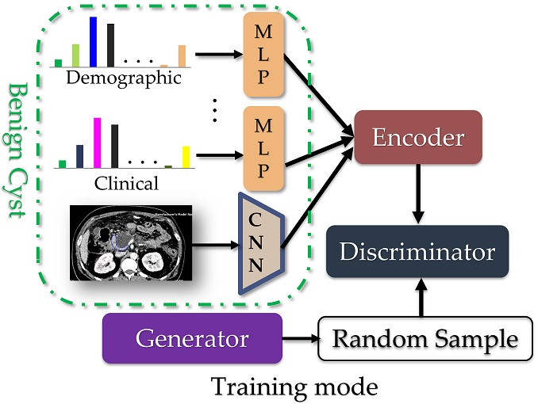
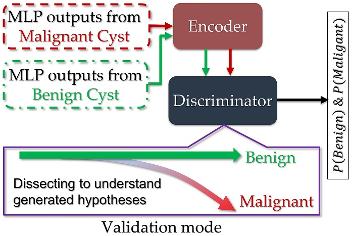

PANC-CYS-GAN: A Multimodal Longitudinal Generative Adversarial Network (GAN) to Cancers Discriminate High-risk Cysts for the Early Detection of Pancreatic Cancer
Pancreatic cancer (PC) is the deadliest common cancer with abysmal survival and a large unmet clinical need. It is already the fourth leading cause of cancer death in Western countries; projected to be the second within a decade. Early detection and diagnosis of PC may allow more treatment options to reduce this lethality to an extent by improving this dismal survival statistics. However, PC is hard to detect early due to: 1) low incidence of PC; 2) absence of well-validated high-risk groups; 3) vague and non-specific early symptoms; 4) absence of cheap and effective diagnostic tests; 5) complex PC biology and deep, inaccessible pancreatic anatomy hindering detection; 6) lack of validated diagnostic biomarkers; and 7) lack of sensitive imaging techniques for accurate detection of small pre-cancerous lesions. Pancreatic cysts (PANC-CYS) are considered precursor lesions to PC and are increasingly being recognised incidentally during scans performed for screening for abdominal aortic aneurysms or colorectal cancer. Currently, there is no robust approach to distinguish the benign from pre-malignant and malignant cysts. As a result, expert consensus guidelines (e.g. Fukoka, European) are used for surveillance, resulting in not only significant healthcare burden (over-investigation and over-treatment) but more importantly, a major anxiety in these patients.
 
There have been major advances in AI in the last five years, and their impact is already visible in the entertainment, automotive and manufacturing industries, but its transformative potential in early detection of PC is yet to be realized. PANC-CYS-GAN aims to address this bottleneck by developing innovative computational analytics that can learn PC-related latent representation of messy and complicated distributions of longitudinal multimodal data. It aims to provide a range of short- and long-term measurable global benefits harnessing UK's positioning in health-informatics and artificial intelligence at the world stage to develop health technology emphasising holistic approach. Information such as, but not limited to, demographic, lifestyle, medical conditions, pathology and blood/urine tests are routinely collected. We hope by integrating host of such routinely collected information with medical imaging data through a Generative Adversarial (GAN) model we can potentially help in triaging patients better.